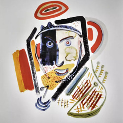

Henry Miller fue uno de esos raros artistas, como el poeta romántico inglés William Blake, que logró la maestría en dos medios: el lenguaje y la pintura.
Jerusalem

Henry Miller fue uno de esos raros artistas, como el poeta romántico inglés William Blake, que logró la maestría en dos medios: el lenguaje y la pintura.